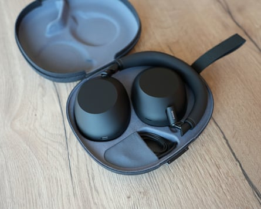
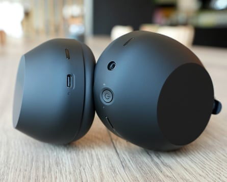
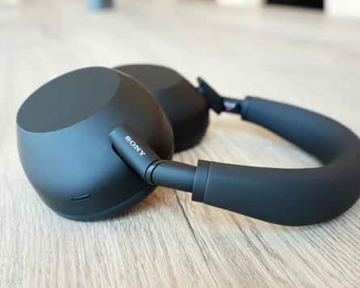

Sony’s latest top-of-the-range Bluetooth headphones seek to reclaim the throne for the best noise cancellers money can buy with changes inside and out.
The Sony 1000X series has long featured some of the best noise cancelling you can buy and has been locked in a battle with rival Bose for the top spot.
The WH-1000XM6 replace the outgoing XM5 model and cost £399 (€449/$449/A$699) – far from cheap but not the most expensive among peers either.
The outside design looks very similar to their predecessors, with smooth, soft-touch plastic bodies, plush earpads and headband, and a subtle Sony logo on the arms. The earcups now swivel and fold to allow the headphones to be more compact for travel in a redesigned hard fabric case with a magnetic clasp.
The case is excellent, closing with a satisfying snap, ready for travel.Photograph: Samuel Gibbs/The Guardian
The new headphones are light but feel solid and ready for the rigours of travel or a commute. They fit well, with enough pressure to keep them in place without any discomfort, though the Bose QC Ultra are more comfortable. The earcups of the XM6 are slightly shallow compared with the Bose, which made getting a proper fit with glasses a little trickier.
The right earcup has a responsive touch panel to handle playback and volume controls with swipes and taps, which works well unless you’re wearing gloves. The left earcup has a power button, a 3.5mm headphones socket and a button for toggling noise-cancelling modes.
The XM6 can connect with two devices simultaneously through Bluetooth 5.3 and support the SBC, AAC and LDAC audio formats. They also support Bluetooth LE (LC3) , the next generation of Bluetooth audio connectivity, which has yet to see widespread adoption but is good for future-proofing. Call quality is very good, sounding natural and full in either quiet or noisy environments, with the option of side tone, where you can hear yourself through the headphones.
Buttons for power and noise-cancelling modes are on the left ear cup, while the right ear cup controls playback and volume via a touch panel.Photograph: Samuel Gibbs/The Guardian
Specifications
- Weight: 254g
- Drivers: 30mm
- Connectivity: Bluetooth 5.3 with multipoint, 3.5mm, USB-C charging
- Bluetooth codecs: SBC, AAC, LDAC, LC3
- Rated battery life: 30 hours ANC on
The headphones lasted slightly longer than their rated 30 hours in testing, managing more than 32 hours between charges using noise cancelling, which is very competitive and certainly long enough for a couple of weeks of commuting. They charge via USB-C in about 3.5 hours and can be used via Bluetooth or the headphones jack while being charged.
Impressive noise cancelling
Inside the XM6 is the first chip upgrade in quite a few years. The new QN3 processor is seven times as fast as the previous model and supports 12 microphones for detecting unwanted noise, delivering some of the most impressive noise cancelling I’ve experienced in a long time.
Most good noise-cancelling headphones handle the low rumbles of engines and other roar-type sounds well, but even the best struggle with higher pitch tones such as keyboard taps and background chatter. Here is where the XM6 have raised the bar, doing a better job than others of neutralising those annoying higher tones, so much so that train and bus announcements were almost inaudible, particularly when listening to music.
They also have a very good, natural-sounding ambient mode allowing you to clearly hear the outside world. There are 20 different levels to choose from or a system to automatically adjust it depending on the background noise. It can also allow voices through while blocking other sounds.
The Sony Sound Connect app controls modes, adjust settings, has a full EQ and performs updates. It also enables location and activity-based modes.Composite: Samuel Gibbs/The Guardian
The headphones produce the sort of rounded, well-controlled and detailed sound you should expect from a market leader. They deliver power and solid bass when needed, while preserving detail across the range with excellent separation of tones. They can be a little clinical in some tracks that require a more raw sound, such as Nirvana’s Smells Like Teen Spirit. They have a warm and slightly bass-accentuated profile out of the box that is a great listen, but a full equaliser allows you to adjust the sound to taste.
The XM6 also support various sound modes, including a novel background music feature that makes it sound as if you’re in a cafe or living room, plus a cinema audio mode for movies. They can also be used with Sony’s 360 Reality Audio system or Android’s built-in spatial audio system including head tracking with supported phones.
Sustainability
The black soft-touch plastic picks up fingerprints quite easily but is easy to polish.Photograph: Samuel Gibbs/The Guardian
The headphones are generally repairable and were praised for a more repairable design by the specialists iFixit. The earcups can easily be removed . The headphones are made with recycled plastic.
Price
The Sony WH-1000XM6 cost £399 (€449/ $449.99 / A$699.95 ). For comparison, the Bose QuietComfort Ultra cost £350 , the Sonos Ace cost £449 , the Beats Studio Pro cost £349.99 , the Sennheiser Momentum 4 Wireless cost £199 and the Fairbuds XL cost £219 .
Verdict
Sony has set a new bar for noise cancelling with its sixth-generation 1000X series headphones. The WH-1000XM6 cut out more of the difficult higher-tone noise such as background chatter better than any other rivals.
The rest is a refinement on previous models. Quality sound makes them a delight to listen to. They are light and comfortable to wear with good controls. Solid 32-plus-hour battery life, a folding design and an excellent case make them easy to live with.
Bose still holds the comfort crown with the QC Ultra, Sony’s design is a bit boring and they certainly aren’t cheap at £400, even if some rivals cost a lot more. But if you want the best noise cancelling money can buy, the WH-1000XM6 are it.
Pros: new best-in-class noise cancelling, great sound, spatial audio, light and comfortable, fold up for travel with great case, Bluetooth multipoint, Bluetooth LE/LC3 support, 32-hour battery life, good controls, good cross-platform control app, more repairable design. Cons: expensive, dull-looking, no water resistance, spatial audio limited with an iPhone.